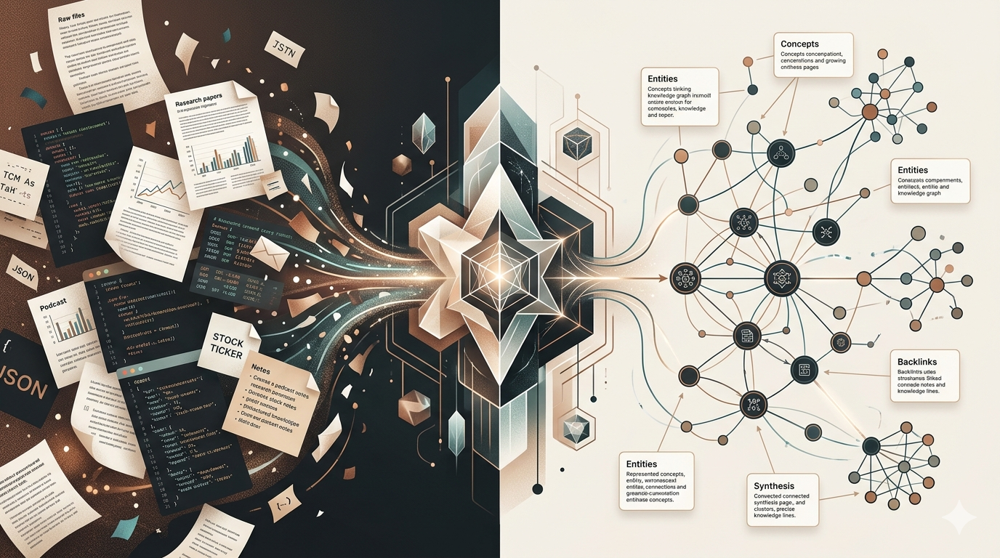

Raw to Knowledge Graph
Turn raw files into a living Markdown knowledge graph with LLM agents. This project helps you ingest raw JSON, generate linked wiki pages, and explore the result as an interactive graph.

Turn raw files into a living Markdown knowledge graph with LLM agents. This project helps you ingest raw JSON, generate linked wiki pages, and explore the result as an interactive graph.
